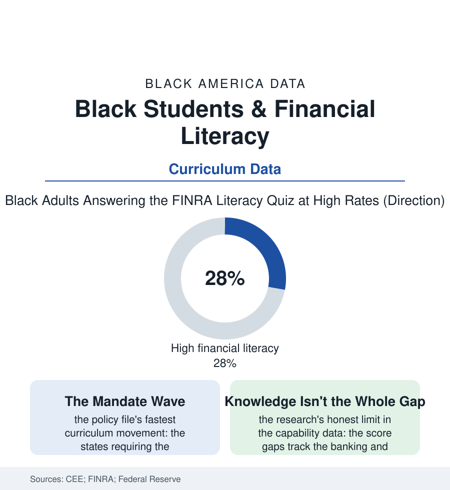

Black Education
Money Class: Financial Literacy and the Mandate Wave
Half the states now require a personal-finance course to graduate — a reform aimed squarely at the wealth file — and its evidence is the rare kind that improves the longer researchers look at it. The money-class file.

It is the only curriculum fight of the era with no organized opposition: the personal-finance course — how credit works, what interest does, why the 401(k) match is free money — now required for graduation in roughly half the states, its mandate wave aimed, in the legislators' own speeches, at the wealth gap itself. Whether a semester can move a balance sheet is a research question with unusually good data. This article reads the money-class file.
The Gap the Course Inherits
The capability data set the baseline honestly: the FINRA foundation's national studies — the interest-compounding and inflation questions asked of tens of thousands — find the literacy scores sorting by race with the Black rows trailing by margins the studies tie, variable by variable, to the files beneath the knowledge (the banked and unbanked households of the banking file: the child of the unbanked learning finance in a house the instruments never entered; the investing rows: the stock file's participation gap meaning the market's vocabulary arrives as a foreign language where the portfolio never modeled it; the debt rows: the predatory products of the credit file as the family's practical curriculum — the rent-to-own contract as a teaching text in compound extraction). The school's own prior offering was the era's afterthought in the data: the finance unit folded into the economics semester, the one-week module, the teacher assigned from the coaching staff's free period — the mandate wave's first act simply being to make the subject a course, with a trained teacher and a tested standard, in the districts of this book as much as anywhere. The implementation rows are already writing the equity chapter the reformers promised to watch: the course's quality sorting by the school's resources in the early audits (the certified finance teacher's scarcity, the curriculum market's uneven shelf), the standalone-course requirement reaching the Black student in the mandate states at the population's share by construction — the entitlement design of the dual-enrollment file's lesson, applied on purpose: what is required of everyone is received by everyone.
What a Semester Can and Cannot Do
The evaluations, accumulated across two decades of state experiments, have converged on a verdict more favorable than the field expected: the mandated-course cohorts in the rigorous studies show measurably better credit behavior in the years after graduation — the scores higher, the delinquencies lower, the payday-loan rows of the credit file thinner — the effects modest per student and enormous in aggregate, the researchers' own surprise recorded in the literature (financial education's earlier, weaker formats had posted null results for years; the standalone, required, well-taught course is the form that works). The limits are the wealth file's, and the file states them without flinching: knowledge does not capitalize a family; the graduate who understands the index fund and has no surplus to invest owns the vocabulary of a game whose buy-in the wage file sets; the course's own content, in the community's critique recorded in the curriculum debates, risks teaching the navigation of an unjust system as though the system were weather — the structural rows belonging, the critics argue, in the same syllabus as the budget worksheet. The best programs in the implementation data do both: the practical instrument and the honest map — the student taught to read the credit card's terms and the redlining file's, to open the Roth and to know why her grandmother's generation was kept from both. The file closes with the mandate's spread as the datum that matters: a reform the culture wars skipped, adopted fastest in many of the states of this atlas, its first fully-treated cohorts now old enough to appear in the credit panels — their rows, in the coming decade's data, will grade the experiment at population scale, in the only currency the subject itself respects.
Reading the Financial Literacy Data
The money-class file is the education section's wager with itself: that some of the wealth gap is a curriculum gap — not the largest part, and the only part a school board can vote on this year. The FINRA studies publish the scores. The credit panels will publish the verdict, one graduating class at a time.
More in Black Education
Black Educational Attainment: High School Parity, the College Gap
About 89 percent of Black adults hold a high school diploma and one in four holds a bachelor's degree or higher — the attainment ladder, the college completion gap, and the generational trend.
Historically Black Colleges and Universities: Enrollment and Degrees
More than 100 HBCUs enroll roughly 290,000 students and award about one in six Black bachelor's degrees — an outsized share from a small sector. The federal education data.
Black College Enrollment: 2.4 Million Students
About 2.4 million Black students are enrolled in American colleges — nearly two-thirds of them women. The NCES enrollment data by sector, level, and trend.
Source: Council for Economic Education state surveys; FINRA Investor Education Foundation capability studies; Federal Reserve financial well-being data; academic evaluations of state mandates.